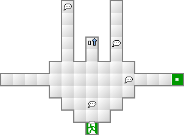
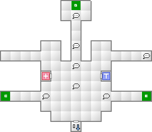
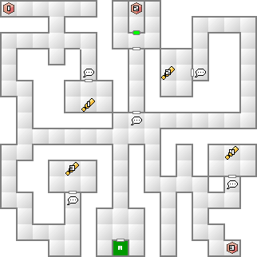
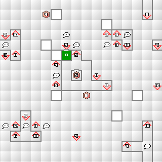
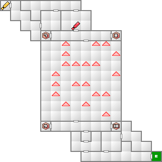

トモコを求めてアクアドルフィンへ。中は先へ進めども進めども行き着くことのないループとなっているので一旦戻ろう。外ではジャグラーなる人物のゲームにつき合うことになる。
入り口から壁伝いに左へ進むと、地面に緑の渦のようなものが見えるはず。これは上に乗ると別の場所に飛ばされる仕掛けになっている。2つのうち南側（右）のワープに乗ろう。
ここから先は二者択一のワープが続く。正しい道は右左右の順。無事に抜けることが出来ればルークのコマを入手できる。これでストレンジエリアはクリアとなる。
ここでは4箇所に点在する老人の話を聞かなくてはならないのだが、移動量が結構な量となるので召還する仲魔は1～2体程度に抑えておきたい。可能なら、エストマで抑えられるレベルに達してからくることをオススメする。
出現する悪魔の中で凶鳥モー・ショボーの自爆は大ダメージを受けるので十分に注意する。
まずは正面の扉の先にある宝物庫へ行った後、老人達全員と話し、再び全員と話し、最後に嘘を付いている老人の元に行けば開門之書を入手できる。
正解は南西の若子と決まっているので、謎解きが面倒なら宝物庫＞南西＞北西＞北東＞南東＞南東＞北東＞北西＞南西＞南西の順に回れば終わりである。
チェスのコマを2つ入手していればジャグラー戦となる。が、チェス盤の間を抜けた先の小部屋でディクローズの石を入手しておくように。これが無いとジャグラー戦で魔法封印を解除することができなくなる。
このエリアには合体材料として優秀な天使が大量に出現するので、ここで材料を集めて戦力を強化するのもいいだろう。
幻魔ハチダイオウは「ドランクスマイル」「端杯手の突き」という酒を飲めば飲むほど威力が上昇する特技を所持している。特にドランクスマイルの効果は絶大で、飲酒最大時には、魔力に抵抗が無い悪魔は、例えボス戦といえどもほぼ確実に魅了状態にしてしまう。ボスが複数の悪魔と共に出現するのはほとんどDISC1のみなので、その間はかなり役に立つだろう。
ハチダイオウのままでは速さがあまり高くないし、DISC1終盤では敵の攻撃に耐えられなくなってくるので、ドランクスマイルを所持させた造魔にするのもいいだろう。造魔は一度覚えた特技は忘れないので、思う存分強化できる。
窓辺のチェスには天使と妖精が。幽滝には地霊が多く出現する。ここで精霊ウンディーネ、精霊シルフ、精霊ノームのうち2体を作成し、御霊ニギミタマの材料として確保しておきたい。後に王国屋で女神スカアハと交換することができるからだ。
| 能力 | LV28 HP830 MP204 力08 知08 魔11 耐07 速06 運05 |
|---|---|
| 特技 | タル・カジャ スク・カジャ 沈黙のささやき 引っかき |
| 火炎 | 氷結 | 電撃 | 衝撃 | 破魔 | 呪殺 | 万能 |
|---|---|---|---|---|---|---|
| 精神 | 神経 | 魔力 | 打撃 | 斬撃 | 技 | 銃撃 |
| 150 | 150 | 150 | 100 | 無効 | 無効 | 100 |
| 無効 | 無効 | 無効 | 100 | 100 | 100 | 100 |
お供として邪鬼ラームジェルグを2体従えている。こいつらは物理攻撃に強く、魔法に弱いという特徴を持つ。
ジャグラーは、1ターン目は必ず沈黙のささやきを使用してくる。これは防ぐことができない魔法で、パーティー全員が魔法・魔法系特技を使用できなくなる。解除するには事前に入手したディクローズの石しかない。
無事に解除できれば、敵側は全て魔法に弱いので、攻撃魔法でガンガン攻めよう。特にジャグラーはタル・カジャを使用してくるので、早めに倒すこと。長引くと不利になってしまう。

A：幽滝へ

B：窓辺のチェスへ
C：ストレンジエリアへ
D：アクアドルフィンへ


マップの上下左右は繋がっている

中央の大部屋では、間違った道を進むと直前の通路まで戻される。
| 妖鳥コカクチョウ(17) | 魔獣カンフュール(15) | 魔獣ギャリートロット(6) |
| 地霊プッツ(18) | 地霊コロポックル(13) | 地霊ノッカー(3) |
| 凶鳥モー・ショボー(15) | 妖獣チャグリン(15) | 邪龍ハクジョウシ(21) |
| 邪龍チョトンダ(12) | 悪霊ガロット(18) |
| 妖魔アプサラス(16) | 龍王ヤトノカミ(22) | 魔獣カタキラウワ(22) |
| 夜魔ザントマン(21) | 堕天使シャックス(17) | 鬼女リャナンシー(19) |
| 鬼女アチェリ(12) | 妖獣カクエン(23) | 妖獣チャグリン(15) |
| 邪鬼ラームジェルグ(26) | 幽鬼チュレル(19) | 悪霊ガロット(18) |
| 天使プリンシパリティ(29) | 天使アークエンジェル(21) | 天使エンジェル(14) |
| 妖精シルキー(24) | 妖精ジャックランタン(20) | 妖精ジャックフロスト(15) |
| 妖樹サンショウ(20) | 邪鬼ウェンディゴ(19) | 幽鬼チュレル(19) |
| 幽鬼オバリヨン(11) | 外道マッドガッサー(25) |